![]()
library(tidyverse) # Data manipulation and plotting
library(tidylog) # Print a log of data manipulations done with tidyverse
library(glmmTMB) # Generalized linear (mixed) models
library(marginaleffects) # Compute marginal/condition effects
library(patchwork) # Combine multiple plots
library(distributional) # Simulate distributions
library(ggdist) # Plot nice distributions
# Set ggplot2 theme
black_theme <- theme(
axis.line = element_line(linewidth = 2, lineend = "round", color = "white"),
panel.grid = element_blank(),
panel.background = element_rect(fill = "black", color = NA),
axis.ticks = element_blank(),
axis.text = element_text(size = 21, face = "bold", color = "white"),
axis.title = element_text(size = 21, face = "bold", color = "white"),
plot.title = element_text(size = 25, face = "bold", color = "white"),
plot.background = element_rect(fill = "black", color = NA),
legend.background = element_rect(fill = "black", color = NA),
legend.text = element_text(size = 21, color = "white"),
legend.title = element_text(size = 21, face = "bold", color = "white"),
legend.position = "bottom"
)
theme_set(black_theme)
# Set global default for geom_point shape
update_geom_defaults("point", list(shape = 1, size = 3, alpha = 0.8))
# silence marginaleffects warnings about glmmTMB
options(marginaleffects_safe = FALSE)
set.seed(333)Introduction
NoteSeries: Understanding Interactions in Regression Models
This is Part 2 of a tutorial series on interactions in regression models. This part focuses on numerical × numerical interactions. Other parts: - Part 1: Categorical × numerical interactions - Part 3: Interactions in generalized linear models (non-linear link functions) - Part 4: Interactions in generalized additive models
This is a follow-up on my previous post about categorical x numerical interactions in regression models. We will now look at numerical x numerical interactions, how to interpret and visualize them, and add a twist to the typical ways they are included or excluded from models. We will stay with Gaussian-distributed response variables for now and add other distributions in the next tutorial.
Setup
First, we load the relevant packages and set up our ggplot2 theme for the rest of the document.
Case Study: Numerical × Numerical Interactions
A bit of math
As in Part 1, a model with an interaction between two predictors \(X_1\) and \(X_2\) looks like:
\[Y = \beta_0 + \beta_1 X_1 + \beta_2 X_2 + \beta_3 (X_1 \times X_2) + \epsilon\]
The difference is that now both \(X_1\) and \(X_2\) are continuous. To see what the interaction coefficient \(\beta_3\) means here, we can rearrange the equation to group the terms involving \(X_1\):
\[Y = \beta_0 + (\beta_1 + \beta_3 X_2) X_1 + \beta_2 X_2 + \epsilon\]
The slope of \(X_1\) is no longer a single number: it is \(\beta_1 + \beta_3 X_2\), a value that changes linearly with \(X_2\). For every one-unit increase in \(X_2\), the slope of \(X_1\) changes by \(\beta_3\). The same logic applies in the other direction: the slope of \(X_2\) is \(\beta_2 + \beta_3 X_1\). In Part 1, the interaction gave us one slope per group; here, we get a different slope for every value of the other predictor.
This also means that \(\beta_1\) alone is the slope of \(X_1\) only when \(X_2 = 0\) (and vice versa). Whether that value is meaningful depends on whether zero is a meaningful value of the other predictor, which is why centering predictors (more on this below) is often useful in models with numerical × numerical interactions.
For the simulated examples in this tutorial, we will be measuring the petal length of flowers in a forest. We are interested in the effect of environmental conditions on petal length.
Simulating the dataset
Let’s simulate an initial dataset of 200 petal lengths, temperature and rain measurements.
n_flowers <- 200
temperature <- rnorm(n = n_flowers, mean = 10, sd = 15)
rain <- rgamma(n = n_flowers, shape = 2)
avg_petal_length <- 25.6
sd_petal_length <- 4.5
temperature_effect <- 0.4
rain_effect <- 0.9
interaction_effect <- 0.2
tibble(
temp_centered = temperature - mean(temperature),
rain_centered = rain - mean(rain),
petal_length = rnorm(
n = n_flowers,
mean = avg_petal_length +
temperature_effect * temp_centered +
rain_effect * rain_centered +
interaction_effect * temp_centered * rain_centered,
sd = sd_petal_length
)
) -> flower_measurements_1You may notice in the code above that, in contrast to how we simulated Bighorn Sheep data in the first tutorial, we have centered the values of the predictors. In other words, we have subtracted the average temperature or rain value from the observations. This has for effect of shifting the model intercept. Rather than the intercept being the average petal length when rain and temperature = 0, it represents the average petal length for flowers exposed to average temperature and rain conditions. This makes its value (debatably) more pertinent to our research topic.
library(GGally)
ggpairs(
flower_measurements_1,
diag = list(continuous = wrap("densityDiag", fill = "white", alpha = 0.6, color = "white")),
lower = list(continuous = wrap("points", color = "white", alpha = 0.6, size = 2, shape = 1)),
upper = list(continuous = wrap("cor", color = "white", size = 5))
) +
theme(
strip.text = element_text(color = "black", face = "bold", size = 12)
)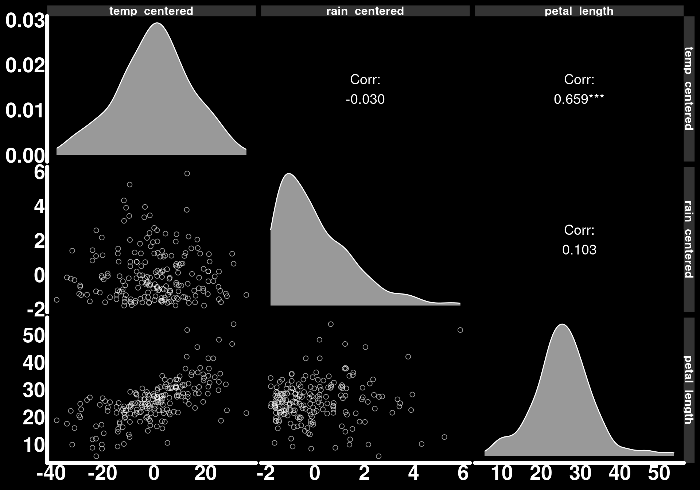
Let’s fit a linear model to these data.
mod_flower_measurements_1 <- glmmTMB(petal_length ~ temp_centered * rain_centered, data = flower_measurements_1)
summary(mod_flower_measurements_1) Family: gaussian ( identity )
Formula: petal_length ~ temp_centered * rain_centered
Data: flower_measurements_1
AIC BIC logLik -2*log(L) df.resid
1170.4 1186.9 -580.2 1160.4 195
Dispersion estimate for gaussian family (sigma^2): 19.4
Conditional model:
Estimate Std. Error z value Pr(>|z|)
(Intercept) 25.81489 0.31145 82.89 < 2e-16 ***
temp_centered 0.38644 0.02195 17.60 < 2e-16 ***
rain_centered 0.82921 0.21235 3.90 9.42e-05 ***
temp_centered:rain_centered 0.19534 0.01725 11.32 < 2e-16 ***
---
Signif. codes: 0 '***' 0.001 '**' 0.01 '*' 0.05 '.' 0.1 ' ' 1We can see from the model output that the model estimates our parameters pretty well.
Notice how we have gone straight to a model without having clearly defined our research questions. We now have a model output; every parameter has 3 stars which means we are significantly happy. But why? And, most importantly, what do these values mean?
Since our vague research objective is to quantify the effect of environmental conditions on petal length, let’s break down our model and extract as many effects as possible. This will help us understand interactions better and formulate more specific research questions.
Let us start with the Estimates for temp_centered and rain_centered. These are the slopes for temperature and rain when the other variable is set to zero. As we mean-centered these predictors, the estimates are the effect of one variable when the other is at its mean. Let’s validate this with the slopes() function.
Temperature effect when rain_centered = 0
slopes(mod_flower_measurements_1,
newdata = datagrid(
rain_centered = 0
),
variables = "temp_centered"
)
rain_centered Estimate Std. Error z Pr(>|z|) S 2.5 % 97.5 %
0 0.386 0.022 17.6 <0.001 228.0 0.343 0.429
Term: temp_centered
Type: response
Comparison: dY/dXRain effect when temperature_centered = 0
slopes(mod_flower_measurements_1,
newdata = datagrid(
temp_centered = 0
),
variables = "rain_centered"
)
temp_centered Estimate Std. Error z Pr(>|z|) S 2.5 % 97.5 %
0 0.829 0.212 3.9 <0.001 13.4 0.413 1.25
Term: rain_centered
Type: response
Comparison: dY/dXHowever, these are the effect of one predictor when the other is set to a single value. As we specified an interaction in the model, we may be more interested in the slope of one of the variables across the range of the values of the other. We will add the average back to the centered values to get the raw values of the predictors back.
Effect of rain:
slopes_by_temp <- slopes(mod_flower_measurements_1,
newdata = datagrid(
temp_centered = seq(min(flower_measurements_1$temp_centered),
max(flower_measurements_1$temp_centered),
length.out = 30
)
),
variables = "rain_centered",
by = "temp_centered"
)
trend_slope_temp <- coef(lm(estimate ~ temp_centered, data = slopes_by_temp))[["temp_centered"]]
slopes_by_temp |>
ggplot() +
geom_hline(yintercept = 0, color = "blue", linewidth = 1.5, linetype = 2) +
geom_ribbon(aes(x = temp_centered + mean(temperature), ymin = conf.low, ymax = conf.high),
alpha = 0.4,
fill = "lightgrey"
) +
geom_line(aes(x = temp_centered + mean(temperature), y = estimate),
lineend = "round",
linewidth = 2,
color = "white"
) +
annotate("text",
x = -Inf, y = Inf,
hjust = -0.2, vjust = 1.5,
label = paste0("slope = ", round(trend_slope_temp, 3)),
color = "white", size = 6, fontface = "bold"
) +
scale_x_continuous(breaks = seq(-25, 50, by = 5)) +
labs(
y = "Effect of rain on petal length",
x = "Temperature values"
)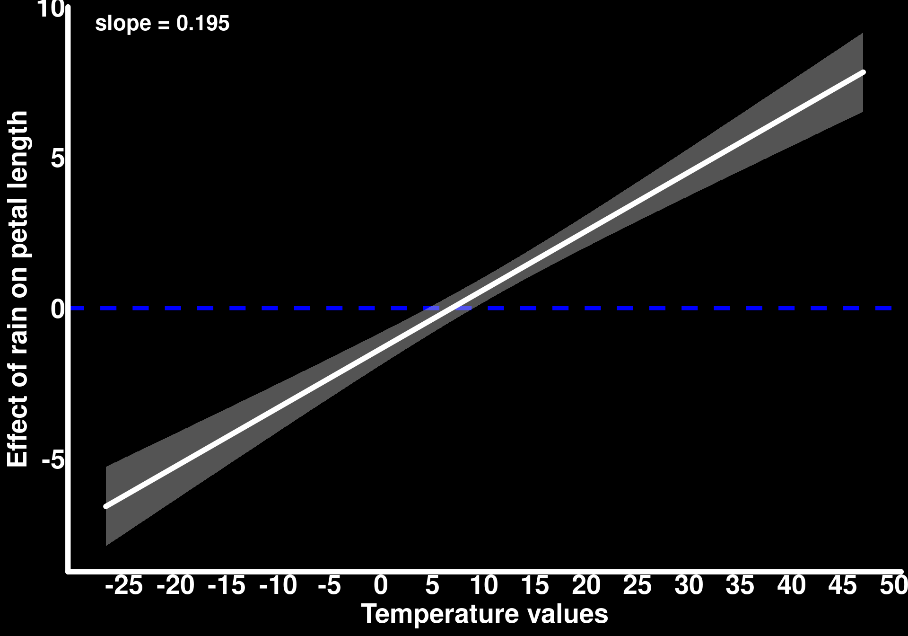
We can see that rain has a negative effect on petal length when temperatures are below 5.
Effect of temperature:
slopes_by_rain <- slopes(mod_flower_measurements_1,
newdata = datagrid(rain_centered = seq(min(flower_measurements_1$rain_centered),
max(flower_measurements_1$rain_centered),
length.out = 30
)),
variables = "temp_centered",
by = "rain_centered"
)
trend_slope <- coef(lm(estimate ~ rain_centered, data = slopes_by_rain))[["rain_centered"]]
slopes_by_rain |>
ggplot() +
geom_hline(yintercept = 0, color = "blue", linewidth = 1.5, linetype = 2) +
geom_ribbon(aes(x = rain_centered + mean(rain), ymin = conf.low, ymax = conf.high),
alpha = 0.4,
fill = "lightgrey"
) +
geom_line(aes(x = rain_centered + mean(rain), y = estimate),
lineend = "round",
linewidth = 2,
color = "white"
) +
annotate("text",
x = -Inf, y = Inf,
hjust = -0.2, vjust = 1.5,
label = paste0("slope = ", round(trend_slope, 3)),
color = "white", size = 6, fontface = "bold"
) +
labs(
y = "Effect of temperature on petal length",
x = "Rain values"
)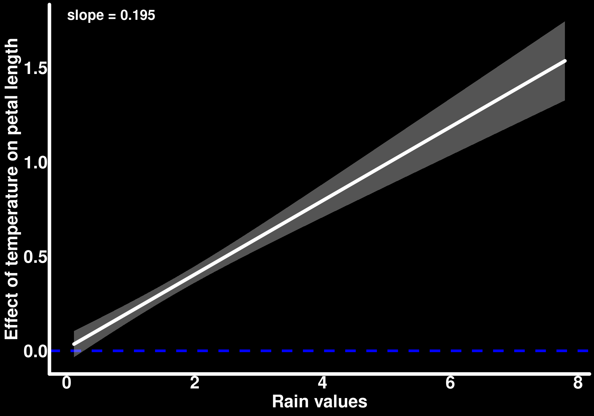
Temperature has a positive effect for all values of rain but that effect increases as rain increases.
We can obtain similar plots using the plot_slopes() function https://marginaleffects.com/man/r/plot_slopes.html
The slope obtained between the effect of one predictor and the values of the other is the interaction parameter we obtain in the model output. This is the moderating effect that the predictors have on one another. As we did not have a very specific research question, we can report both of the plots above as a description of how temperature and rain moderate each other’s effect on petal length. In many contexts, however, we have apriori hypotheses about how variables interact within a system. For example, if we study a drought-resistant plant, we may hypothesize that temperature (the exposure variable) is the most relevant factor that could affect petal length (the outcome) but its effect is moderated by rain (the moderator). If that is the case, let’s look at some ways to display the model predictions.
We can start by looking at the predicted average petal length as a function of temperature for different values of rain. The choice of moderator values for which we generate predictions can vary depending on the research question. It is common to choose certain quantiles of the moderator. In this example, we will use the five-number summary (https://en.wikipedia.org/wiki/Five-number_summary) for rain values.
predictions(mod_flower_measurements_1,
newdata = datagrid(
temp_centered = seq(min(flower_measurements_1$temp_centered),
max(flower_measurements_1$temp_centered),
length.out = 30
),
rain_centered = fivenum
)
) |>
as_tibble() |>
mutate(rain = round(rain_centered + mean(rain), 2)) |>
ggplot() +
geom_line(aes(y = estimate,
x = temp_centered + mean(temperature),
color = as.factor(rain)),
lineend = "round",
linewidth = 1.5) +
geom_ribbon(aes(ymin = conf.low,
ymax = conf.high,
x = temp_centered + mean(temperature),
fill = as.factor(rain)),
alpha = 0.2) +
labs(
y = "Predicted petal length",
x = "Temperature",
color = "Rain",
fill = "Rain"
) +
coord_cartesian(ylim = c(0, 50))mutate: new variable 'rain' (double) with 5 unique values and 0% NA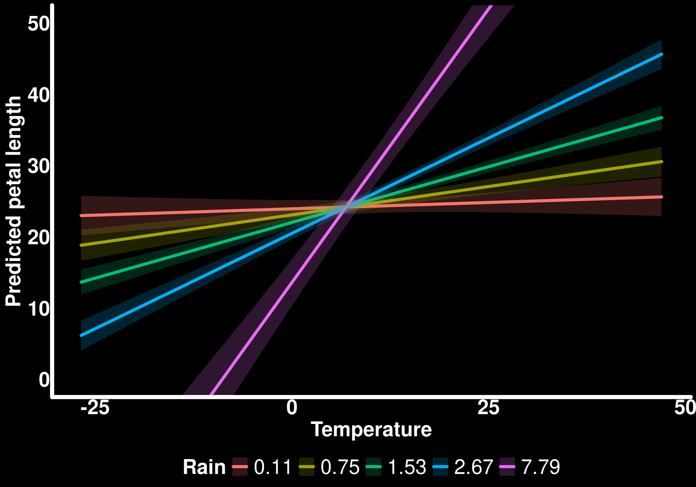
If we ignore the fact that the model predicts negative petal lengths when temperature is low and rain is high (7.79), visualizing the model predictions this way clearly shows how the effect of temperature on petal length varies with/is moderated by rain values.
Another way to visualize these trends is to generate a response surface.
predictions(mod_flower_measurements_1,
newdata = datagrid(
temp_centered = seq(min(flower_measurements_1$temp_centered),
max(flower_measurements_1$temp_centered),
length.out = 30
),
rain_centered = seq(min(flower_measurements_1$rain_centered),
max(flower_measurements_1$rain_centered),
length.out = 30
)
)
) |>
as_tibble() |>
mutate(rain = rain_centered + mean(rain),
temp = temp_centered + mean(temperature)) |>
ggplot(aes(x = rain, y = temp, z = estimate)) +
stat_contour_filled() +
labs(
y = "Temperature",
x = "Rain",
fill = "Predicted petal length"
)mutate: new variable 'rain' (double) with 30 unique values and 0% NA
new variable 'temp' (double) with 30 unique values and 0% NA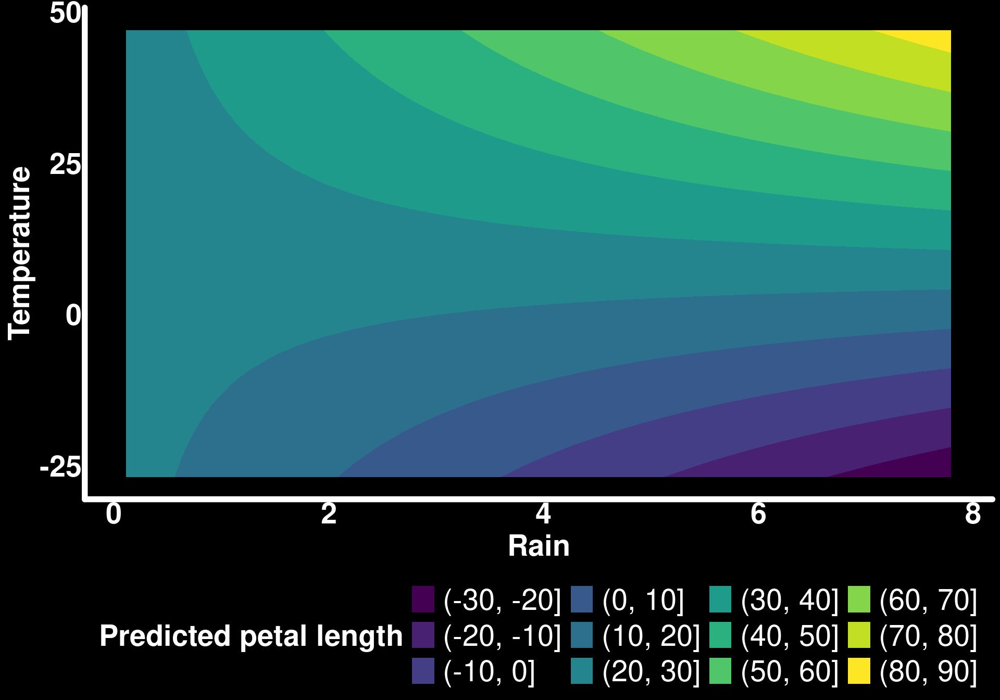
The advantage of these plots is that we can see how the predictions change for all combinations of the exposure (temperature) and moderator (rain). For example, if we focus on rain = 6 and look up from the bottom of the y-axis to the top (as temperature increases), we can see the predicted petal length increase substantially (again, ignoring the fact that negative values are predicted). I personally prefer plots such as the one with predictions for the five-number summary as they are less of a mind-bender and it is easier to see the uncertainty related to the predicted mean. I’ve also noticed that response surfaces displayed as such lead people to over-interpretation of the results. As we can arbitrarily change the values in each color bin (yellow could be for predicted petal lengths of 60-90 instead of 80-90), and the 95% confidence intervals are missing, we can overemphasize effects that, in reality, are poorly supported by the model.
For fun, let’s visualize this response surface in 3D with the 95% confidence intervals. I would not necessarily recommend these plots for a publication but they can be a useful way to better understand the model predictions and their uncertainty. These plots will also be informative for future topics in this tutorial series.
library(ggcube)
predictions(mod_flower_measurements_1,
newdata = datagrid(
temp_centered = seq(min(flower_measurements_1$temp_centered),
max(flower_measurements_1$temp_centered),
length.out = 30
),
rain_centered = seq(min(flower_measurements_1$rain_centered),
max(flower_measurements_1$rain_centered),
length.out = 30
)
)
) |>
as_tibble() |>
mutate(
rain = rain_centered + mean(rain),
temp = temp_centered + mean(temperature)
) |>
ggplot() +
stat_surface_3d(aes(x = rain, y = temp, z = conf.high), fill = "red", alpha = 0.4) +
stat_surface_3d(aes(x = rain, y = temp, z = estimate), fill = "blue") +
stat_surface_3d(aes(x = rain, y = temp, z = conf.low), fill = "red", alpha = 0.4) +
coord_3d(light = "none") +
labs(
z = "Petal length",
x = "Rain",
y = "Temp"
) -> resp_surface_3d
animate_3d(resp_surface_3d, yaw = c(0, 360))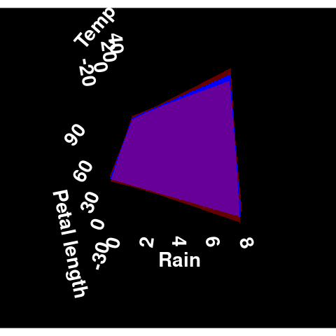
The animation does not render the way I would like it to but I hope the reader can still appreciate the shape of the response surface in all its dimensions. We will explore response surfaces of different shapes in a future tutorial on interactions with Generalized Additive Models (GAMs).
Bonus Case Study: Variance-moderating effects
Let’s push our petal length example a bit further and define our research question more clearly. Previously, we had been interested in how rain moderates the effect of temperature on the average petal length. Suppose now that we have individuals in our population that are cold-resistant whereas other individuals are less resistant to the point that when temperatures are below zero, these non-cold-resistant individuals die before we get to measure them. Under this scenario, temperature resistance genes are linked to petal growth such that a reduction in genetic diversity at low temperatures leads to a reduction in the amplitude of the response of petal length to low temperatures at the population level. In other words, a reduction in genetic diversity reduces the variance of observed population petal length at low temperatures. As temperature increases, the average petal length responds in the same way as in the previous examples but the variance of these observations increases. For now, we are leaving rain aside to concentrate on a simpler example of how we can analyse data that are generated from this scenario.
It turns out that the described scenario leads to heteroscedasticity around the average petal length as a function of temperature; the variance is not constant around the average through the trend. It turns out that we can use glmmTMB to take into account this heteroscedasticity by modeling the standard deviation of petal length. These types of regressions are called distributional regression because we model more than one parameter of the response distribution (in this case, we want to model the mean and standard deviation of the Normal distribution). glmmTMB estimates the standard deviation on the log scale which assumes an exponential increase in the observed standard deviation (or variance).
Let’s simulate data.
# Dispersion model parameters (on log scale to match glmmTMB)
log_sd_intercept <- log(sd_petal_length) # log(sd) when temp_centered = 0
log_sd_temp_slope <- 0.03 # Effect of temp on log(sd)
tibble(
temp_centered = temperature - mean(temperature),
rain_centered = rain - mean(rain),
petal_length = rnorm(
n = n_flowers,
mean = avg_petal_length +
temperature_effect * temp_centered,
sd = exp(log_sd_intercept + log_sd_temp_slope * temp_centered)
)
) -> flower_measurements_2
ggplot(flower_measurements_2, aes(x = temp_centered + mean(temperature), y = petal_length)) +
geom_smooth(method = 'lm',
lineend = "round",
linewidth = 2,
color = "white",
se = F) +
geom_point(color = "white") +
labs(x = "Temperature",
y = "Observed petal length")`geom_smooth()` using formula = 'y ~ x'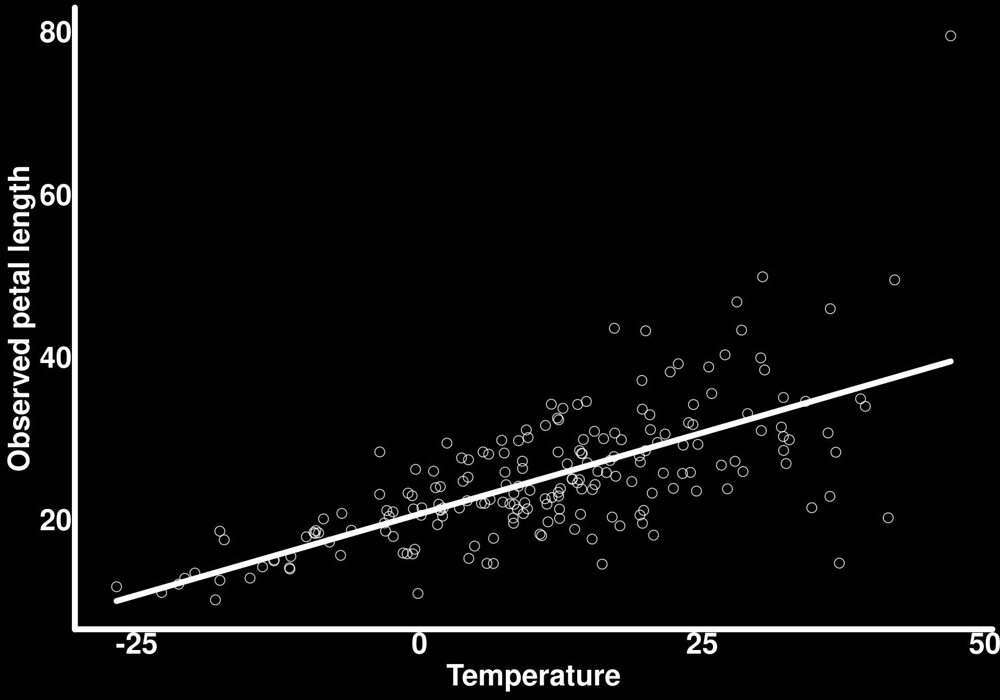
We can see here that the chosen parameter values reflect exactly our scenario - the observed petal length variance (standard deviation squared) increases starting around temperatures of zero.
We can model the standard deviation using the dispformula argument in glmmTMB
mod_flower_measurements_2 <- glmmTMB(petal_length ~ temp_centered,
dispformula = ~ temp_centered,
data = flower_measurements_2)
summary(mod_flower_measurements_2) Family: gaussian ( identity )
Formula: petal_length ~ temp_centered
Dispersion: ~temp_centered
Data: flower_measurements_2
AIC BIC logLik -2*log(L) df.resid
1209.9 1223.1 -601.0 1201.9 196
Conditional model:
Estimate Std. Error z value Pr(>|z|)
(Intercept) 25.05970 0.38289 65.45 <2e-16 ***
temp_centered 0.38257 0.01967 19.45 <2e-16 ***
---
Signif. codes: 0 '***' 0.001 '**' 0.01 '*' 0.05 '.' 0.1 ' ' 1
Dispersion model:
Estimate Std. Error z value Pr(>|z|)
(Intercept) 1.585907 0.050000 31.72 <2e-16 ***
temp_centered 0.031597 0.003285 9.62 <2e-16 ***
---
Signif. codes: 0 '***' 0.001 '**' 0.01 '*' 0.05 '.' 0.1 ' ' 1# Check simulated sd parameters
cat("\nExpected dispersion intercept (log scale):", log_sd_intercept, "\n")
Expected dispersion intercept (log scale): 1.504077 cat("Expected dispersion slope:", log_sd_temp_slope, "\n")Expected dispersion slope: 0.03 The model recovers our simulated parameters pretty well
Let’s visualize how well the model recovers the variance structure: We do this by predicting the standard deviation values for all observed values of temperature via the type = “disp” argument in predictions()
# estimate sd
predictions(mod_flower_measurements_2, newdata = flower_measurements_2, type = "disp") |> as_tibble() -> pred_sd_temp
# simulated sd
flower_measurements_2 |>
mutate(
true_sd = exp(log_sd_intercept + log_sd_temp_slope * temp_centered)
) -> true_sd_tempmutate: new variable 'true_sd' (double) with 200 unique values and 0% NA# Plot comparison
ggplot() +
# True simulated variance
geom_line(data = true_sd_temp,
aes(x = temp_centered + mean(temperature),
y = true_sd, color = "Simulated"),
linewidth = 2,
linetype = "dashed"
) +
geom_ribbon(data = pred_sd_temp,
aes(ymin = conf.low, ymax = conf.high,
x = temp_centered + mean(temperature)),
fill = "red",
alpha = 0.6) +
geom_line(data = pred_sd_temp,
aes(x = temp_centered + mean(temperature),
y = estimate,
color = "Estimated"),
linewidth = 2,
lineend = "round"
) +
scale_color_manual(
values = c("Simulated" = "green", "Estimated" = "red"),
name = "Standard deviation"
) +
labs(
x = "Temperature",
y = "Standard deviation"
)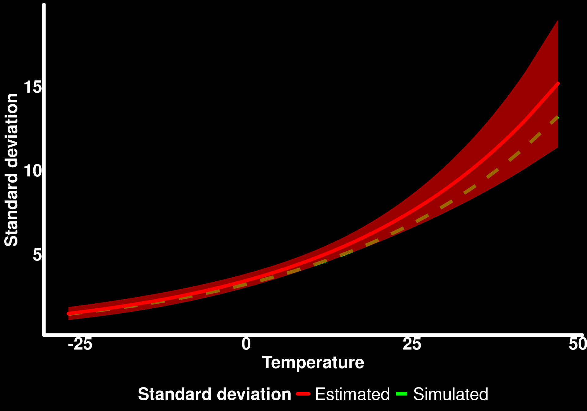
The model recovers the simulated relationship between petal standard deviation and temperature pretty well.
Now that we understand distributional regression a bit better, let’s look at moderating effects for the standard deviation (or variance) and how we can communicate the results in the most interpretable ways. We will get funky here and simulate only simple effect of temperature and rain on the mean petal length (without interaction) and add an interaction between the two variables on the standard deviation of petal length. Distributional regression is essentially a combination of (linear) models for each of the modeled distribution parameters so it may actually be more useful in certain cases to have different model formulas (and/or predictors) for the different distribution parameters, depending on the research question.
log_sd_rain_slope <- 0.02 # effect of rain on log(sd)
log_sd_interaction_effect <- 0.005 # interacting effect of temp and rain on log(sd)
tibble(
temp_centered = temperature - mean(temperature),
rain_centered = rain - mean(rain),
petal_length = rnorm(
n = n_flowers,
mean = avg_petal_length +
temperature_effect * temp_centered +
rain_effect * rain_centered,
sd = exp(log_sd_intercept +
log_sd_temp_slope * temp_centered +
log_sd_rain_slope * rain_centered +
log_sd_interaction_effect* temp_centered * rain_centered)
)
) -> flower_measurements_3
ggpairs(
flower_measurements_3,
diag = list(continuous = wrap("densityDiag", fill = "white", alpha = 0.6, color = "white")),
lower = list(continuous = wrap("points", color = "white", alpha = 0.6, size = 2, shape = 1)),
upper = list(continuous = wrap("cor", color = "white", size = 5))
) +
theme(
strip.text = element_text(color = "black", face = "bold", size = 12)
)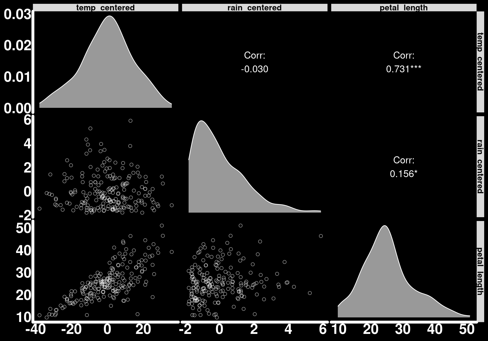
The model
mod_flower_measurements_3 <- glmmTMB(petal_length ~ temp_centered + rain_centered,
dispformula = ~ temp_centered+ rain_centered + temp_centered*rain_centered,
data = flower_measurements_3)
summary(mod_flower_measurements_3) Family: gaussian ( identity )
Formula: petal_length ~ temp_centered + rain_centered
Dispersion:
~temp_centered + rain_centered + temp_centered * rain_centered
Data: flower_measurements_3
AIC BIC logLik -2*log(L) df.resid
1160.3 1183.4 -573.2 1146.3 193
Conditional model:
Estimate Std. Error z value Pr(>|z|)
(Intercept) 25.37890 0.33059 76.77 < 2e-16 ***
temp_centered 0.40460 0.01723 23.49 < 2e-16 ***
rain_centered 0.84073 0.17147 4.90 9.44e-07 ***
---
Signif. codes: 0 '***' 0.001 '**' 0.01 '*' 0.05 '.' 0.1 ' ' 1
Dispersion model:
Estimate Std. Error z value Pr(>|z|)
(Intercept) 1.451865 0.050040 29.014 <2e-16 ***
temp_centered 0.033769 0.004062 8.314 <2e-16 ***
rain_centered 0.040511 0.036099 1.122 0.2618
temp_centered:rain_centered 0.007749 0.003122 2.482 0.0131 *
---
Signif. codes: 0 '***' 0.001 '**' 0.01 '*' 0.05 '.' 0.1 ' ' 1# Check simulated sd parameters
cat("\nExpected dispersion intercept (log scale):", log_sd_intercept, "\n")
Expected dispersion intercept (log scale): 1.504077 cat("Expected dispersion temperature slope:", log_sd_temp_slope, "\n")Expected dispersion temperature slope: 0.03 cat("Expected dispersion rain slope:", log_sd_rain_slope, "\n")Expected dispersion rain slope: 0.02 cat("Expected dispersion interaction slope:", log_sd_interaction_effect, "\n")Expected dispersion interaction slope: 0.005 Let’s go through an entire workflow for reporting all of the results we generated with this model.
First, let’s start with the predictors’ effects on the average petal length. We were not interested in an interaction between these two variables for the average so we will plot the predicted average of petal as a function of the two predictors side-by-side.
#Temperature effect when rain_centered = 0
predictions(mod_flower_measurements_3,
newdata = datagrid(
rain_centered = 0
),
variables = "temp_centered"
) |> as_tibble() -> pred_temp
ggplot(pred_temp) +
geom_ribbon(
aes(ymin = conf.low, ymax = conf.high,
x = temp_centered + mean(temperature)),
fill = "white",
alpha = 0.2) +
geom_line(
aes(x = temp_centered + mean(temperature),
y = estimate),
linewidth = 2,
lineend = "round",
color = "white") +
labs(y = "Predicted average petal length",
x = "Temperature") -> temp_avg_plot
# Rain effect when temp_centered = 0
predictions(mod_flower_measurements_3,
newdata = datagrid(
temp_centered = 0
),
variables = "rain_centered"
) |> as_tibble() -> pred_rain
ggplot(pred_rain) +
geom_ribbon(
aes(ymin = conf.low, ymax = conf.high,
x = rain_centered + mean(rain)),
fill = "white",
alpha = 0.2) +
geom_line(
aes(x = rain_centered + mean(rain),
y = estimate),
linewidth = 2,
lineend = "round",
color = "white") +
labs(y = "Predicted average petal length",
x = "Rain") -> rain_avg_plot
temp_avg_plot | rain_avg_plot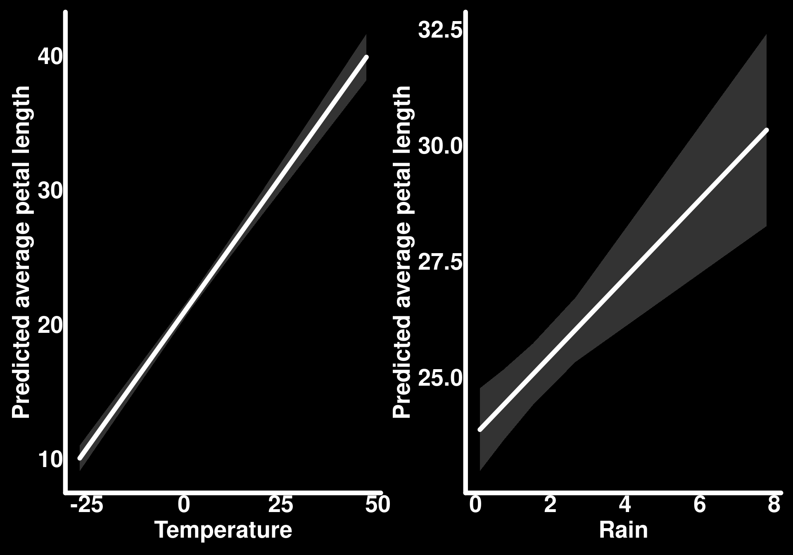
These are the conditional effects of each of the two predictors on the average petal length.
Now let’s look at the interacting effect of temperature and rain on the standard deviation in the ways we did as for the average petal length in the first example.
predictions(mod_flower_measurements_3,
newdata = datagrid(
temp_centered = seq(min(flower_measurements_3$temp_centered),
max(flower_measurements_3$temp_centered),
length.out = 30
),
rain_centered = fivenum
),
type = "disp"
) |>
as_tibble() |>
mutate(rain = round(rain_centered + mean(rain), 2)) |>
ggplot() +
geom_line(aes(y = estimate,
x = temp_centered + mean(temperature),
color = as.factor(rain)),
lineend = "round",
linewidth = 1.5) +
geom_ribbon(aes(ymin = conf.low,
ymax = conf.high,
x = temp_centered + mean(temperature),
fill = as.factor(rain)),
alpha = 0.2) +
labs(
y = "Predicted standard deviation of petal length",
x = "Temperature",
color = "Rain",
fill = "Rain"
) +
coord_cartesian(ylim = c(0, 50))mutate: new variable 'rain' (double) with 5 unique values and 0% NA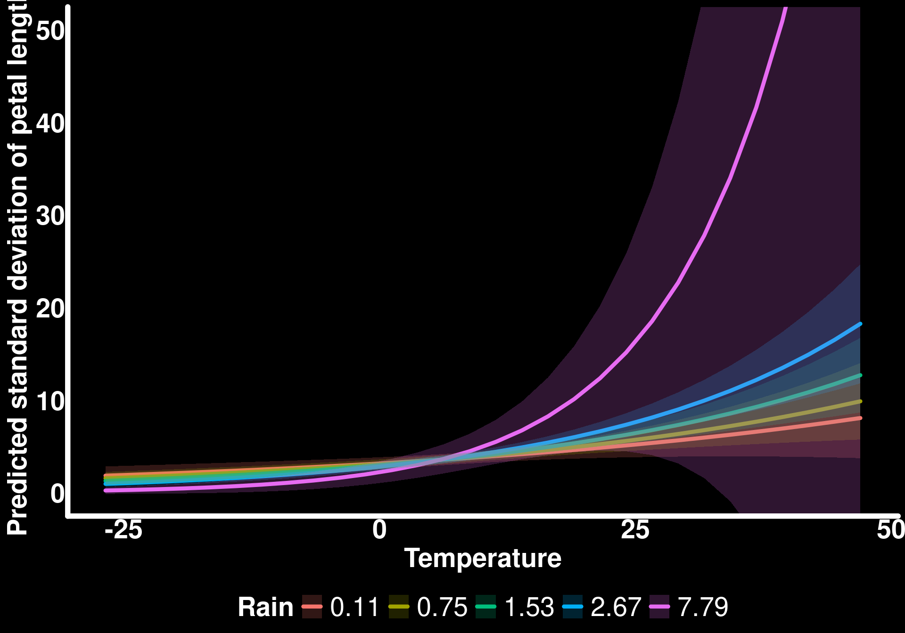
Now, with a response surface
predictions(mod_flower_measurements_3,
newdata = datagrid(
temp_centered = seq(min(flower_measurements_3$temp_centered),
max(flower_measurements_3$temp_centered),
length.out = 30
),
rain_centered = seq(min(flower_measurements_3$rain_centered),
max(flower_measurements_3$rain_centered),
length.out = 30
)
),
type = "disp"
) |>
as_tibble() |>
mutate(rain = rain_centered + mean(rain),
temp = temp_centered + mean(temperature)) |>
ggplot(aes(x = rain, y = temp, z = estimate)) +
stat_contour_filled() +
labs(
y = "Temperature",
x = "Rain",
fill = "Predicted sd of petal length"
)mutate: new variable 'rain' (double) with 30 unique values and 0% NA
new variable 'temp' (double) with 30 unique values and 0% NA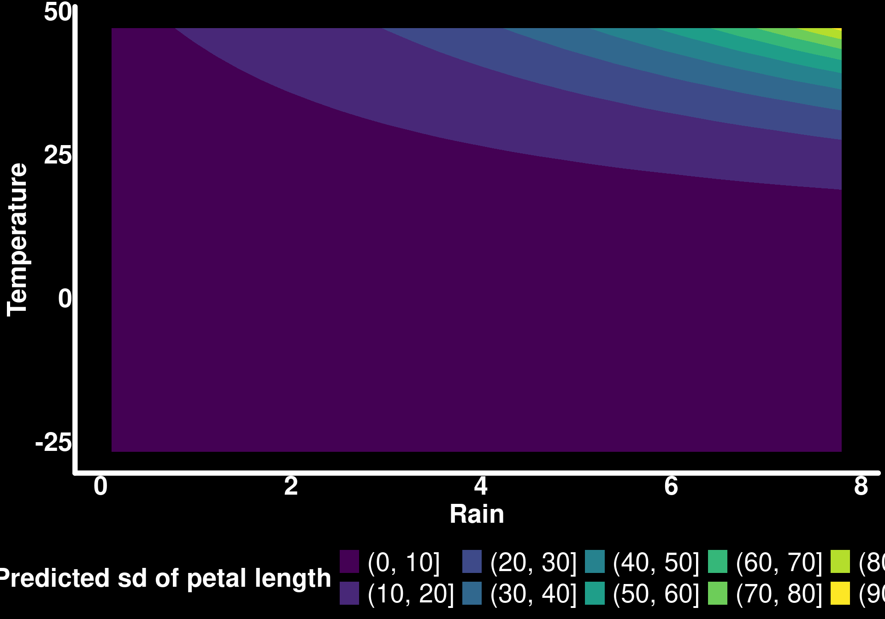
The response surface is not great in this specific example because extremely high standard deviations are predicted when temperature and rain are high.
We can also look at the moderating effect of temperature on the effect of rain on petal standard deviation
slopes_by_temp_sd <- slopes(mod_flower_measurements_3,
newdata = datagrid(
temp_centered = seq(min(flower_measurements_3$temp_centered),
max(flower_measurements_3$temp_centered),
length.out = 30
)
),
variables = "rain_centered",
by = "temp_centered",
type = "disp"
)
slopes_by_temp_sd |>
ggplot() +
geom_hline(yintercept = 0, color = "blue", linewidth = 1.5, linetype = 2) +
geom_ribbon(aes(x = temp_centered + mean(temperature), ymin = conf.low, ymax = conf.high),
alpha = 0.4,
fill = "lightgrey"
) +
geom_line(aes(x = temp_centered + mean(temperature), y = estimate),
lineend = "round",
linewidth = 2,
color = "white"
) +
scale_x_continuous(breaks = seq(-25, 50, by = 5)) +
labs(
y = "Effect of rain on sd petal length",
x = "Temperature values"
)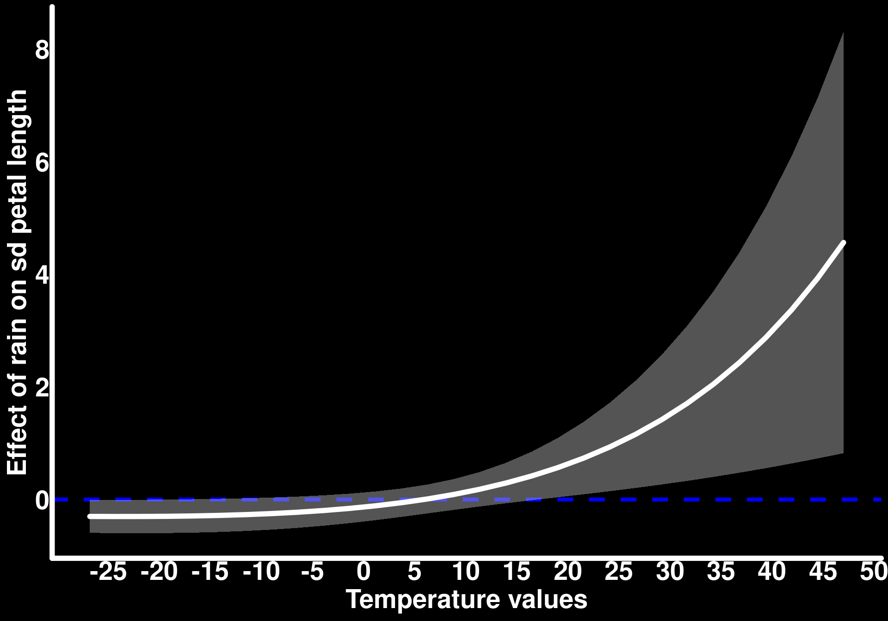
And the inverse, the moderating effect of rain on the effect of temperature on petal standard deviation
slopes_by_rain_sd <- slopes(mod_flower_measurements_3,
newdata = datagrid(rain_centered = seq(min(flower_measurements_3$rain_centered),
max(flower_measurements_3$rain_centered),
length.out = 30
)),
variables = "temp_centered",
by = "rain_centered",
type = "disp"
)
slopes_by_rain_sd |>
ggplot() +
geom_hline(yintercept = 0, color = "blue", linewidth = 1.5, linetype = 2) +
geom_ribbon(aes(x = rain_centered + mean(rain), ymin = conf.low, ymax = conf.high),
alpha = 0.4,
fill = "lightgrey"
) +
geom_line(aes(x = rain_centered + mean(rain), y = estimate),
lineend = "round",
linewidth = 2,
color = "white"
) +
labs(
y = "Effect of temperature on sd petal length",
x = "Rain values"
)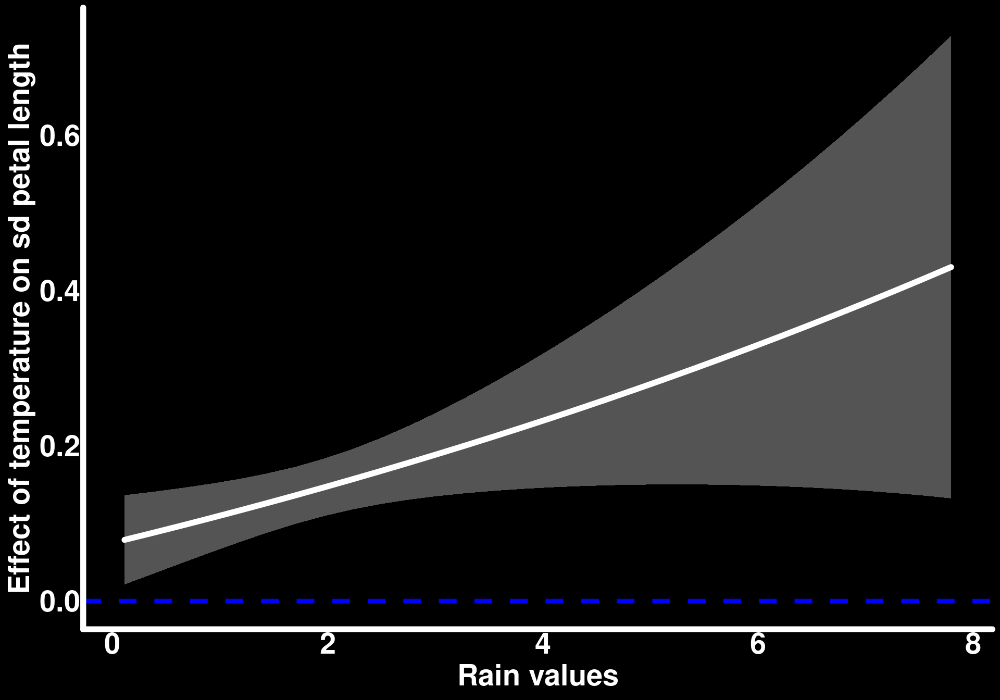
While reporting the predictors’ effects on the average and standard deviation of petal length separately is informative, I personally find it difficult to interpret knowing that the two parameters of the Normal distribution act together to generate the observations. I suggest in this case to also create figures that communicate the predicted observations generated from the estimate values of the average and standard deviation. We can do so by predicting the average and standard deviation based on different values of temperature and rain. In the following code, we predict the average petal length using the type = “conditional” argument in predictions() and join these values to the predicted standard deviation using the type = “disp” argument. We then use the distributional package which I absolutely love to generate distributions. In this specific case, we use the dist_normal() function to which we give the predicted values of the average and standard deviation of petal length for every combination of predictor values. The result gives an entire distribution contained within a single cell in the dataset. In other words, every row of the pred_obs column is a distribution of predicted observations of petal length.
predictions(mod_flower_measurements_3,
newdata = datagrid(
temp_centered = fivenum,
rain_centered = fivenum
),
type = "conditional") |>
as_tibble() |>
select(temp_centered, rain_centered, estimate) |>
rename(mu = estimate) |>
left_join(predictions(mod_flower_measurements_3,
newdata = datagrid(
temp_centered = fivenum,
rain_centered = fivenum
),
type = "disp") |>
as_tibble() |>
select(temp_centered, rain_centered, estimate) |>
rename(sd = estimate)) |>
rowwise() |>
mutate(temp_centered = round(temp_centered),
rain_centered = round(rain_centered),
pred_obs = dist_normal(mu = mu, sd = sd)) -> predicted_observationsselect: dropped 9 variables (rowid, std.error, statistic, p.value, s.value, …)
rename: renamed one variable (mu)
select: dropped 9 variables (rowid, std.error, statistic, p.value, s.value, …)
rename: renamed one variable (sd)
Joining with `by = join_by(temp_centered, rain_centered)`
left_join: added one column (sd)
> rows only in rename(select(as_tibble.. 0
> rows only in rename(select(as_tibble.. ( 0)
> matched rows 25
> ====
> rows total 25
mutate: changed 25 values (100%) of 'temp_centered' (0 new NAs)
changed 25 values (100%) of 'rain_centered' (0 new NAs)
new variable 'pred_obs' (list) with 25 unique values and 0% NAtemp_labels <- c(
`-38` = "temp = -38",
`-9` = "temp = -9",
`1` = "temp = 1",
`9` = "temp = 9",
`36` = "temp = 36")
ggplot(predicted_observations, aes(xdist = pred_obs, color = as.factor(rain_centered))) +
stat_slab(fill = NA, normalize = "xy") +
scale_color_brewer(palette = "Accent") +
facet_wrap(~ as.factor(temp_centered), scales = "free", labeller = as_labeller(temp_labels)) +
labs(x = "Predicted petal length", color = "Rain (centered)") +
theme(axis.line.y = element_blank(),
axis.text.y = element_blank(),
axis.title.y = element_blank(),
strip.text = element_text(color = "black", face = "bold", size = 12))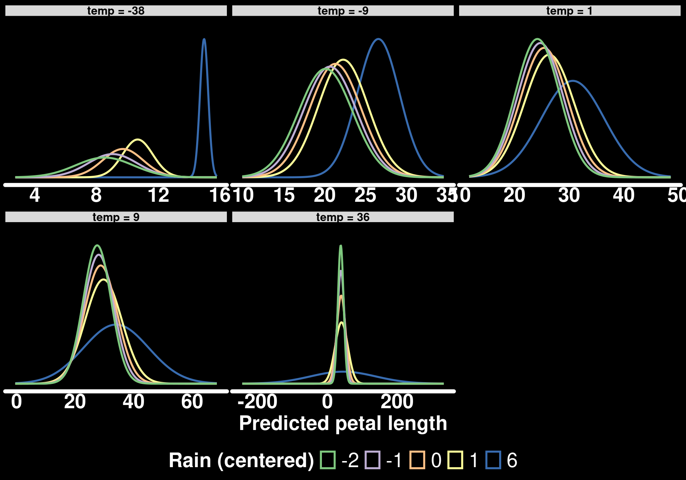
This type of figure provides a richer understanding of the model, in my opinion. We can see that petal length is generally similar across values of temperature and rain except when rain is in extremely high values.
Summary and Key Takeaways
What we learned
Numerical × numerical interactions mean variable-dependent slopes: With an interaction, the slope of one predictor changes linearly with the value of the other. The interaction coefficient \(\beta_3\) is the amount by which the slope of one predictor changes for a one-unit increase in the other.
Centering helps interpretation: When predictors are mean-centered, the “main effect” coefficients are the slopes of each predictor when the other is at its average, and the intercept is the predicted response under average conditions.
Plot the slopes, not just the coefficients: Plotting the slope of one predictor across the range of the other (with
slopes()) shows where an effect is positive, negative, or indistinguishable from zero.Choose visualizations for your question: Conditional prediction lines at chosen moderator values (e.g., the five-number summary) are usually easier to interpret than response surfaces, which lack uncertainty information and can encourage over-interpretation.
Interactions are not only for the mean: With distributional regression (e.g.,
dispformulain glmmTMB), predictors can interact in their effect on the standard deviation of the response. Visualizing the full predicted distributions (with the distributional and ggdist packages) helps interpret how the modeled parameters act together.
Tools for interpretation
slopes()withby =: Get the slope of one predictor across values of the otherpredictions()withdatagrid(): Generate conditional predictions at chosen combinations of predictor values (e.g.,fivenumfor the moderator)type = "disp": Get predictions or slopes for the dispersion (standard deviation) modelplot_slopes()andplot_predictions(): Quick versions of the plots we built manually
In the next part of this series, we will look at interactions in generalized linear models, where non-linear link functions add another layer of complexity to interpretation.